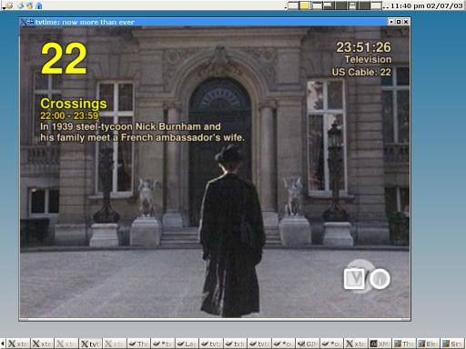

|
tvtime is a high quality television application for use with video
capture cards. tvtime processes the input from a capture card
and displays it on a computer monitor or projector.

tvtime supports:
- Deinterlaced output at full interlaced rate of 59.94 frames per
second for NTSC source, or 50 frames per second for PAL sources.
This gives smoothness of motion and high visual quality.
- Multiple deinterlacing algorithms for finding the optimal mode for
the video content and available processor speed.
- 16:9 aspect ratio mode for the highest available resolution when
processing input from an external DVD player or digital satellite
receiver.
- A super-slick on-screen-display for the complete television
experience.
- 2-3 Pulldown detection for optimal quality viewing of film content
from NTSC sources.
This is a local copy of the
tvtime home page. Also
available are:
| tvtime 0.9.8 |
|---|
- tvtime 0.9.8.5 released on 20 Jun 2003
- tvtime 0.9.8.4 released on 10 Jun 2003 to fix for metacity in RH 8.0
- tvtime 0.9.8.3 released on 8 Jun 2003
- tvtime 0.9.8.2 released on 3 May 2003 to fix compile bugs in 0.9.8.1
- tvtime 0.9.8.1 released on 3 May 2003
- tvtime 0.9.8 released on 28 Apr 2003
|
| tvtime 0.9.7 |
|---|
- Thanks for filling out the survey! Another will be posted
later, in the mean time, here are the results:
tvtime
0.9.7 survey results
- tvtime 0.9.7 released on 26 Feb 2003
|
|